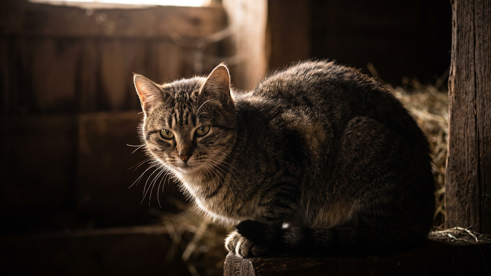

Кошка замирает, фокусирует взгляд на игрушке и начинает покачивать задом из стороны в сторону. Смешно выглядит, но за этим движением стоит точная биомеханика. Это последний шаг охотничьей последовательности перед броском. Разбираемся, что именно происходит и как использовать эту фазу в игре с пользой для кошки.
🐾 У вашей кошки так же?
Расскажите в AnimaLife, как ведёт себя ваш питомец, — приложение объяснит причину и даст пошаговый план. Бесплатно, без записи к специалисту.
Разобрать свой случай → Разобрать в MAX →
У вас iPhone? AnimaLife есть в App Store
Это покачивание не нервозность и не случайное движение. Кошка переносит вес с одной задней лапы на другую, нащупывая правильную точку опоры. Задние ноги отвечают за толчок, и от того, как они расположены в момент прыжка, зависит точность и дальность броска. Это своего рода прицеливание через тело.
Одновременно кошка разогревает мышцы ног: небольшие покачивающие движения активируют мышечные волокна, отвечающие за взрывной прыжок. Лапы на старте получают нужный тонус без того, чтобы кошка выдала себя движением.
Пока зад раскачивается, голова остаётся неподвижной. Кошка удерживает объект в поле зрения и вычисляет траекторию. Такое разделение движений говорит о том, что перед нами настоящий охотничий протокол, а не игра.
Вибриссы при этом направлены вперёд, уши развёрнуты к цели, зрачки расширены. Все системы говорят одно: кошка в полном сосредоточении. Любой резкий звук в этот момент сбросит концентрацию, и она начнёт всё сначала.
У кошек есть устойчивая цепочка охотничьего поведения: выслеживание, подкрадывание, замирание, прицеливание (вилянье) и бросок. Вилянье задом почти всегда стоит прямо перед прыжком. Если кошка прерывает последовательность и уходит без броска, добыча её не убедила: слишком лёгкая, слишком предсказуемая или слишком далеко.
Когда кошка начала раскачиваться, не двигайте игрушку резко в сторону. Дайте ей завершить последовательность и поймать цель. Кошка, которая часто не успевает завершить охоту, накапливает неудовлетворённость, и это выходит в другом месте: избыточная активность ночью, агрессивные игры с ногами хозяина.
Лучший ритм игры: несколько мелких движений игрушки с паузами, потом кошка раскачивается, потом бросок, потом «добыча» поймана. Завершённая охотничья последовательность успокаивает и даёт кошке ощущение выполненной задачи. Две-три такие игры в день по 10-15 минут заменят часы хаотичного бегания по квартире.
Материал носит информационный характер и не заменяет очную консультацию ветеринара.
🐾 Хотите понять, что кошка говорит вам?
Опишите ситуацию или пришлите видео в AnimaLife — AI разберёт поведение вашего питомца и подскажет, что делать. Бесплатно, ответ за минуту.
Разобрать поведение → Разобрать в MAX →
У вас iPhone? AnimaLife есть в App Store
🐾 Понравился разбор?
Подпишитесь на канал — каждый день разбираем по одному тревожному симптому у кошек и собак: что в пределах нормы, а когда пора к врачу. Подпишитесь, чтобы не пропустить разбор, который может спасти здоровье вашего питомца.